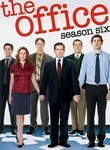
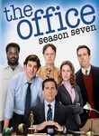

The Office
Stephen Klancher
...has seen 97
...has seen 32.3 hours
...has not seen 30.3 hours

Timeline
Most Recent:
The Lover
First Unseen:
Niagara: Part 2 (# 97)
...has seen 97
...has seen 32.3 hours
...has not seen 30.3 hours
Timeline
Most Recent:
The Lover
First Unseen:
Niagara: Part 2 (# 97)


Stephen Klancher: February 14, 2009 
Nice to jump back into a series after half a year and be instantly reminded that you love the characters.
Stephen Klancher: February 17, 2009
The opening gag of the gift wrapped desk was awesome. ...and a zombie joke!...
Stephen Klancher: February 17, 2009
"The fire is shooting at us!" That opening scene was amazing. Great double-length episode.
Stephen Klancher: February 18, 2009
"My feelings regenerate at twice the speed of a normal man's." Man some parts of this show are awkward overload.
Stephen Klancher: May 6, 2009
They ask him to crunch the numbers again. He tells them it's a program: there's no crunching... They insist, he hits enter and says "Crunch!"
Pam leans in and very seriously asks, "Did it help?" So cute.
Pam leans in and very seriously asks, "Did it help?" So cute.
Stephen Klancher: May 26, 2009
The skit ending was pretty funny. Also the last scene was really cool how there was no sound and just let us see Pam and Jim's facial expressions.

Stephen Klancher: May 12, 2011
It's been a long time since I last watched The Office. Sometimes I like it and sometimes the style doesn't suit me. But as I am reminded while watching this episode and looking at previous comments on other episodes I've watched: Pam is cute. Even when mad.
